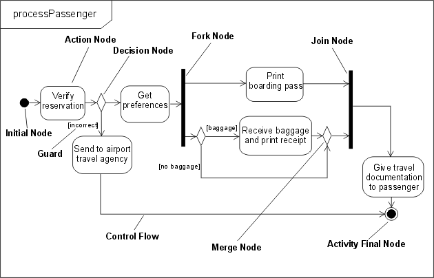
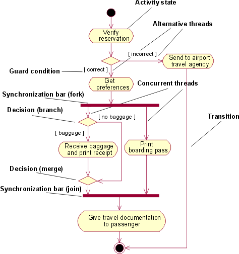
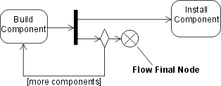
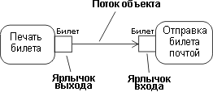
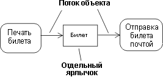
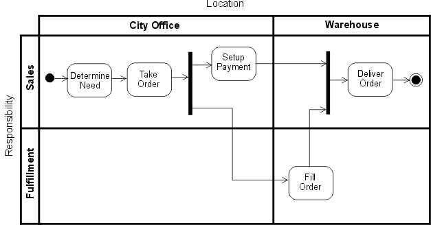
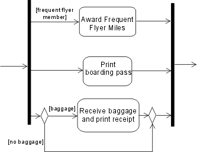
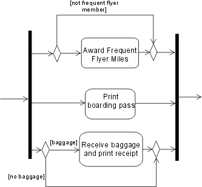
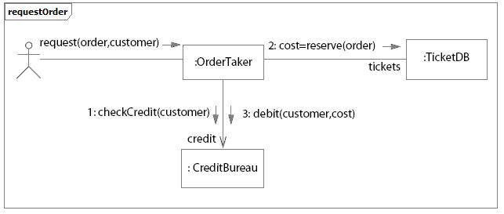
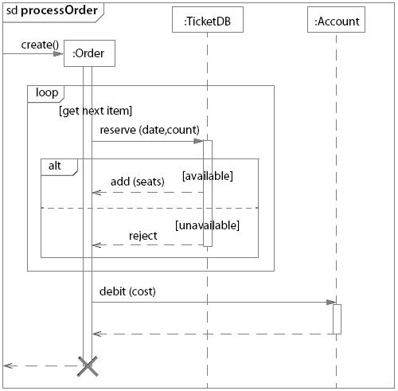

| Различия между UML 1.x и UML 2.0 |
 |
|
Разделы
ОбзорНа этой странице описаны некоторые различия между UML 1.x и UML 2.0, которые относятся к контексту RUP. Задача заключается не в описании всех спецификаций инфраструктуры и суперструктуры UML ([UML04, а в обзоре соответствующих возможностей UML. Дополнительная информация приведена также в [RUM05] и [ERI04]. Обратите внимание, что "UML 1.x" относится к версиям от UML 1.0 до UML 1.5. Наиболее значительные изменения в диаграммах набора функций UML 2.0 относятся к поведенческим диаграммам, особенно к диаграмме деятельности и набору диаграмм взаимодействия (см. Диаграмма деятельности, Диаграмма последовательности и Диаграмма связей ниже). Диаграмма составных структур и Структурный класс также являются новыми функциями UML 2.0 (см.Диаграмма составных структур ниже). Диаграмма деятельностиВведениеМоделирование деятельности подверглось полному пересмотру в UML 2.0. По правде говоря, по крайней мере при нерегулярном использовании, действие и внешний вид могут быть чрезвычайно похожи, хотя в зависимости от формализма моделирования в UML 1.5 (и более ранних версиях), возможно, что строгая интерпретация и результат выполнения модели, построенной в соответствии с правилами UML 1.x, будут отличаться от них в UML 2.0. Поэтому дизайнерам следует иметь в виду, что даже в том случае, если модель деятельности UML 1.x кажется приемлемой в UML 2.0 без внесения изменений, ее выполнение может быть иным - особенно в случае более сложных моделей, включающих параллелизм. Дополнительная информация приведена в [UML04]. Как определяется в[UML04], деятельность (которая будет показана на диаграмме деятельности) является спецификацией поведения как скоординированной последовательности подчиненных блоков, отдельными элементами которых являются действия. Мы будем неофициально называть отдельные исполняемые шаги на диаграмме деятельности в UML 1.x как действия, или, правильнее, как состояния действия: теперь эти шаги в деятельности UML 2.0 называются действиями - и эти действия далее не подразделяются внутри деятельности. Второстепенное значение состояния удалено в UML 2.0, поскольку деятельность более не является своего рода автоматом, как это было в UML 1.x. В UML 2.0 деятельность состоит из узлов с действиями одного типа; ниже описаны также узлы контроля и узлы объектов. Семантика потока Деятельности теперь имеют семантику, подобную сети Петри, основанную на потоке маркеров, где выполнение одного узла воздействует на выполнение другого посредством прямых соединений, называемых потоками. Маркеры, содержащие объекты или локус контроля, перемещаются между узлами по этим соединениям. Узлу разрешено начать выполнение, если соблюдаются заданные условия в его входных маркерах, а после завершения выполнения узел предоставляет маркеры в выходных потоках, так чтобы узлы ниже по течению могли начать выполнение. Потоки, соединяющие узлы, далее превращаются в управляющие потоки и потоки данных или объектов, и, как можно ожидать, маркеры контроля перемещаются в управляющих потоках, а объекты или данные проходят по потокам объектов. В этом состоит отличие от UML 1.x, где узлы являлись состояниями (или псевдосостояниями) с переходами между ними, которые ограничивали моделирование потоков. Моделирование параллелизма Моделирование в UML 2.0 разрешает неограниченный параллелизм: в то время как в UML 1.x весь автомат (деятельность) выполнял один шаг до выполнения, возможности UML 2.0, в наиболее полной форме, разрешают управление несколькими вызовами деятельности в одном выполнении с несколькими потоками маркеров, которые перемещаются между узлами и коннекторами потоков деятельности. В связи с этим дизайнер должен быть в курсе условий соревнования и взаимодействий. Также в разделе Различия в семантике ниже приводится еще один пример моделирования параллелизма семантики потоков маркеров. НотацияУзлы действий и контроля На приведенной ниже диаграмме показаны многие элементы UML 2.0 и представлены обычным для UML 2.0 способом, с каркасом и заголовком в рамке слева вверху. Сравните эту диаграмму с версией UML 1.x, показанной под ней. Они имеют схожий внешний вид (разрешая изменение ориентации и и применяемых цветовых обозначений - это не имеет значения с точки зрения семантики). Результат выполнения этой модели будет одним и тем же и в UML 1.x, и в UML 2.0. Обратите внимание, что узлы контроля - принятия решения, слияния, ветвления, соединения, начальный и конечный - имеют такой же вид, как и их эквиваленты в UML 1.x, а управляющие потоки показаны с помощью стрелок - визуального аналога стрелок в UML 1.x.  Пример диаграммы деятельности в UML 2.0  Пример диаграммы деятельности в UML 1.x В UML 2.0 имеется дополнительный тип узла контроля, который называется Окончание потока (показан ниже на диаграмме, взятой из [UML04]) и используется в качестве альтернативы узлу Окончание деятельности для завершения потока Activity Final. Этот узел необходим, поскольку в UML 2.0, если управление достигает какого-либо экземпляра узла Окончание деятельности, то завершается вся деятельность (включая все потоки). Узел Окончание потока просто завершает поток, к которому он прикреплен. Этот вопрос не возникал в UML 1.5, поскольку применялась семантика "выполнять до завершения". Однако поскольку в UML 2.0 реализуется неограниченный параллелизм, то вы можете не захотеть останавливать все потоки и разрушать все маркеры.  Узел контроля Окончание потока Узлы объектов В моделировании деятельности в UML 2.0 также поддерживаются узлы объектов. Узел объектов представляет собой узел деятельности, который указывает, что экземпляр определенного классификатора (возможно, в определенном состоянии) может быть доступен в определенной точке деятельности (например, как вывод или ввод для действия). Узлы объектов действуют как контейнеры, в которые и из которых могут течь объекты определенного типа (и, возможно, в определенном состоянии). В UML 2.0 для узлов объектов была представлена новая нотация, которая называется Контакт. Контакты представляют входные или выходные объекты для действия и изображаются в виде небольших прямоугольников, присоединенных к прямоугольнику действия, как показано ниже.  Нотация Контакт Стрелками представлены потоки объектов. Это сплошные линии, в отличие от пунктирных линий, которые использовались в UML 1.x для переходов к состояниям потоков объектов и от них. Если имя выходного контакта для действия совпадает с именем входного контакта подключенного действия, то эти контакты могут быть объединены в автономный контакт. Это также дает визуальный аналог потоку объектов в UML 1.x.  Нотация автономного контакта Узлы структурных деятельностей Структурный узел деятельности представляет собой исполняемый узел деятельности, который может расширяться в подчиненные узлы деятельностей. Подчиненные узлы принадлежат только одному структурному узлу деятельности, но могут быть вложенными. К подчиненному узлу могут быть подключены управляющие потоки и присоединены контакты. Структурный узел деятельности изображается пунктиром в виде прямоугольника с закругленными углами, который охватывает узлы и потоки. Вверху прямоугольника размещается ключевое слово <<структурный>>. Разделы деятельности Раздел деятельности представляет собой способ группировки узлов и потоков деятельности в соответствии с какой-либо общей характеристикой. В UML 1.x для группировки действий в соответствии с каким-либо критерием на диаграммах деятельности применялась идея дорожек (которые рассматривались как разделы)- например, в бизнес-моделировании - по исполняющей организации. В UML 2.0 эта возможность разделения расширена для диаграмм деятельности по нескольким направлениям. Предоставляется дополнительная нотация, так что, например, отдельные действия можно пометить именем раздела, которому они принадлежат. На представленной ниже диаграмме приведен пример многомерных дорожек в соответствии с UML 2.0, где действия группируются по расположению и ответственности.  Пример разделов деятельности с применением двумерной дорожки Различия в семантике Семантика потока маркеров и неограниченный параллелизм моделей деятельности в UML 2.0 требуют от дизайнера, знакомого с UML 1.x, внимательности при создании новых моделей или преобразовании существующих моделей, для того чтобы гарантировать получение требуемого результата. Например, в приведенном выше примере processPassenger регистрируемый пассажир может оказаться часто летающим пассажиром. В этом случае агенту требуется присудить этому пассажиру бонусные мили, как показано ниже в фрагменте модели UML 1.x.  Применение защищенного параллельного перехода Размещение защиты на необязательном параллельном переходе означает, что, в UML 1.x, переход никогда не начинается и поведение аналогично тому, как если бы этот переход не был показан в модели; соответственно, после выполнения двух других переходов выполнение продолжается после слияния. В UML 2.0, если пассажир не является часто летающим, никакой маркер не достигает точки слияния в этом потоке, и модель будет остановлена, поскольку слияния должны достичь маркеры всех его потоков. Модель следует составить так, как показано ниже, где условие трактуется так же, как поток управления багажом. Допускается размещение защиты непосредственно на параллельных потоках, если только ниже по течению нет зависящих от них слияний.  Применение узлов решения и объединения вместо защищенного параллельного потока Диаграмма связейДиаграмма кооперации в UML 1.x была переименована в диаграмму связей в UML 2.0. Семантических отличий от предыдущих версий нет. Диаграмма связей основана на диаграмме кооперации и по-прежнему является одним из типов диаграммы взаимодействия. НотацияДиаграмма связей сфокусирована на взаимодействии между генеральными линиями. Она изображается в виде графа, узлы которого - это прямоугольники, представляющие части структурного класса или ролей кооперации. Используется прямоугольная рамка с именем в отделе слева в верхнем углу - изменение в нотации по сравнению с предыдущими версиями UML.
Пример диаграммы связей:  Пример диаграммы связей для системы упорядочения КомпонентВ UML 2.0 нотация компонента выполняется с помощью символа класса без двух выступающих прямоугольников, как определялось в UML 1.4. Вместо этого применяется стереотип <<компонент>>. (Необязательно) значок компонента, аналогичный значку в UML 1.4, по-прежнему можно использовать в правом верхнем углу символа компонента. UML 2.0 определяет компонент как структурный класс. Это означает, что для лучшего описания его поведения можно моделировать кооперацию между элементами в его внутренней структуре (частях). Части соединяются с помощью коннекторов. Для увеличения уровня инкапсуляции компонента посредством предоставляемых и требуемых интерфейсов можно использовать порты. Дополнительная информация приведена в разделах Концепции: Компонент иКонцепции: Структурный класс. В более ранних версиях UML определялся специальный элемент моделирования - подсистема, который моделировался как пакет с интерфейсом. Также компоненты применялись для интеграции модели в физическую архитектуру. В UML 2.0 компоненты применяются более широко, во всех частях модели. Таким образом, более не требуется специальный элемент для моделирования подсистем. Отдельные ячейки для реализации и спецификации подсистемы в UML 1.x превратились в отдельные стереотипы (<<реализация>> и <<спецификация>>, соответственно), которые применяются к компонентам в UML 2.0. Еще один новый стереотип - <<подсистема>>, применяется для моделирования крупных компонентов. В RUP для моделирования подсистем предлагается использовать компоненты (дополнительная информация приведена в разделеРекомендации: Проектирование подсистемы). Диаграмма составных структурАрхитектуры могут включать особые связи между элементами, части и коннекторы которых могут быть неизвестны во время проектирования. Обычной диаграммы классов (также как и других статических диаграмм) недостаточно для четкого представления ролей, ответственностей, взаимосвязей и правил, которые применяются к таким элементам. Для таких ситуаций в UML 2.0 была добавлена диаграмма составных структур. С ее помощью можно изобразить внутреннюю структуру структурного класса (например, компонента или класса), включая точки взаимодействия структурного класса с другими частями системы. Эта диаграмма показывает конфигурацию частей, которые совместно представляют поведение содержащего их структурного класса. Диаграммы составных структур применяются для изображения внутреннего содержимого структурных классов (подробные сведения и примеры диаграмм составных структур приведены в разделеКонцепции: Структурный класс). Диаграмма последовательностиВ UML 2.0 представлено несколько новых функциональных возможностей для диаграммы последовательности:
При наличии новых возможностей представления фрагментов - экземпляров взаимодействия и циклов - диаграммы последовательностей можно использовать в двух формах:
На приведенном ниже рисунке показан пример диаграммы последовательности, моделирующей различные сценарии. Фрагмент alt показывает две возможных альтернативы последовательности сообщений, в зависимости от того, удовлетворяется ли условие или нет:  Пример: Диаграмма последовательности, демонстрирующая ветви, циклы и условия |
© Copyright IBM Corp. 1987, 2006. Все права защищены.. |